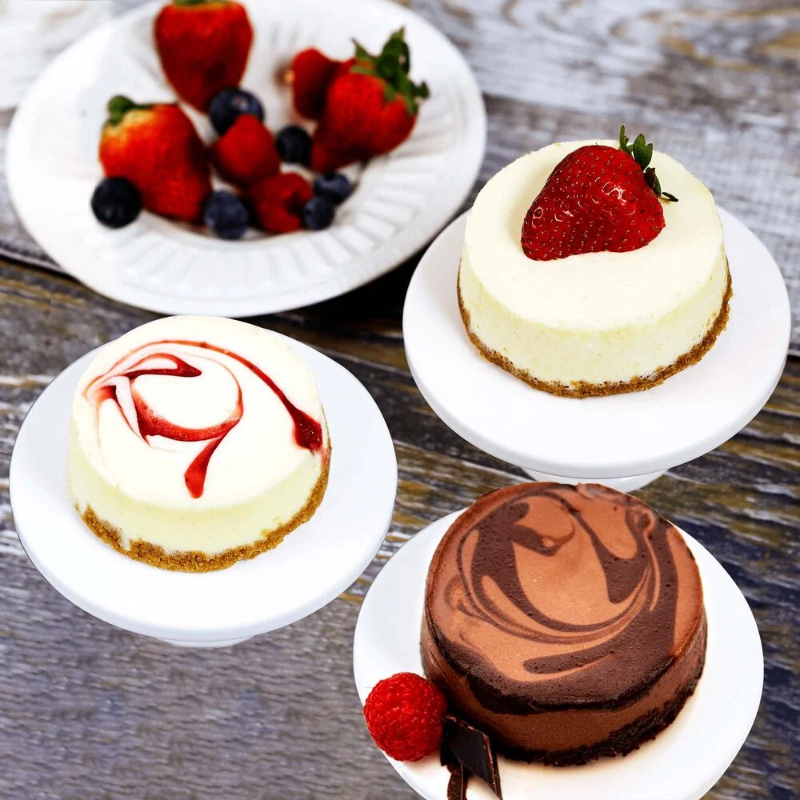

INDULGE IN OUR BAKED DELIGHTS
Desserts have a special place in our hearts and on our plates. From the creamy richness of ice cream to the delicate layers of a mille-feuille, these sweet treats bring joy to people worldwide. But how much do you really know about them? Did you know that the first chocolate cake recipe was published in 1847? Or that cheesecake dates back to ancient Greece? Desserts are more than just sugar and flour; they carry stories, traditions, and a sprinkle of history. Ready to satisfy your curiosity and sweet tooth?
Desserts have a fascinating history and a variety of forms that make them beloved worldwide. From chocolate's ancient origins to the ice cream innovations of the 20th century, these treats have evolved in delightful ways. Bakers and chefs continue to push boundaries, creating new flavors and textures that surprise and delight. Whether you prefer cakes, cookies, or pastries, there's always something new to try. Next time you enjoy a sweet treat, remember the rich history and creativity behind it. Desserts aren't just about satisfying a sweet tooth; they're a testament to human ingenuity and cultural diversity. So, go ahead, indulge a little, and appreciate the stories behind your favorite sweets.